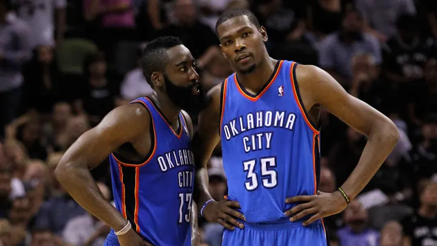

Muchos medios de comunicación afirman que "La Barba",James Harden,querría salir de su equipo actual(Houston Rockets)para volver a reencontrarse con su antiguo compañero de equipo,Kevin Durant,y asi poder conseguir el anillo en la nueva franquicia.Aún así,Houston Rockets afirma que Harden permanecerá con ellos la siguiente temporada de la NBA.
